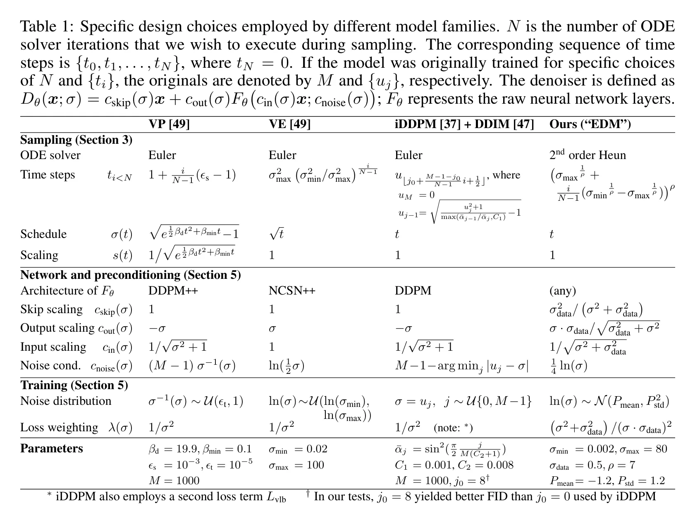
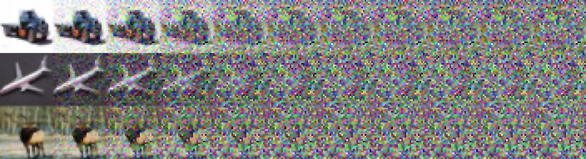
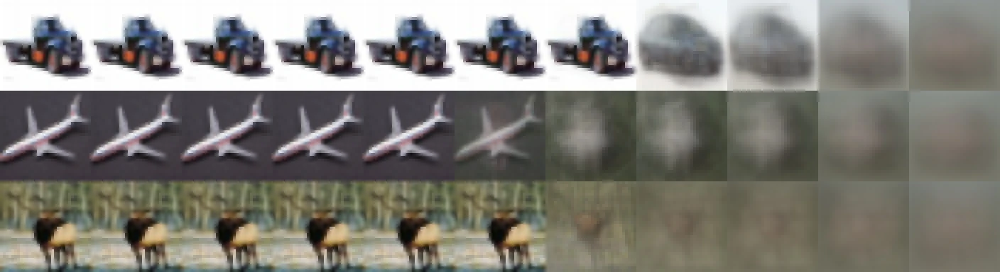
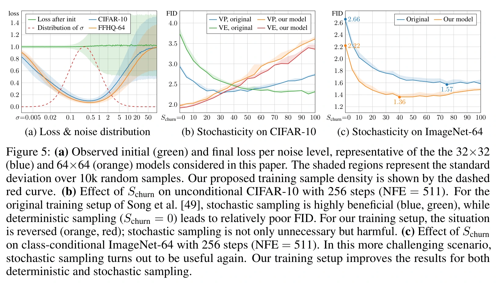
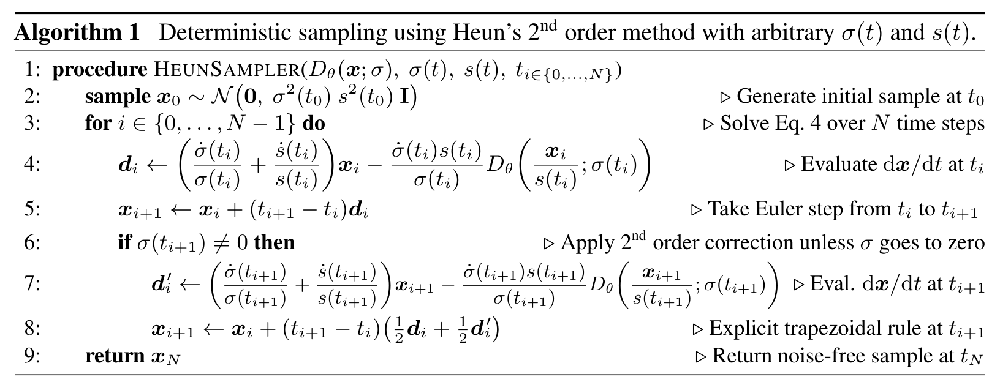
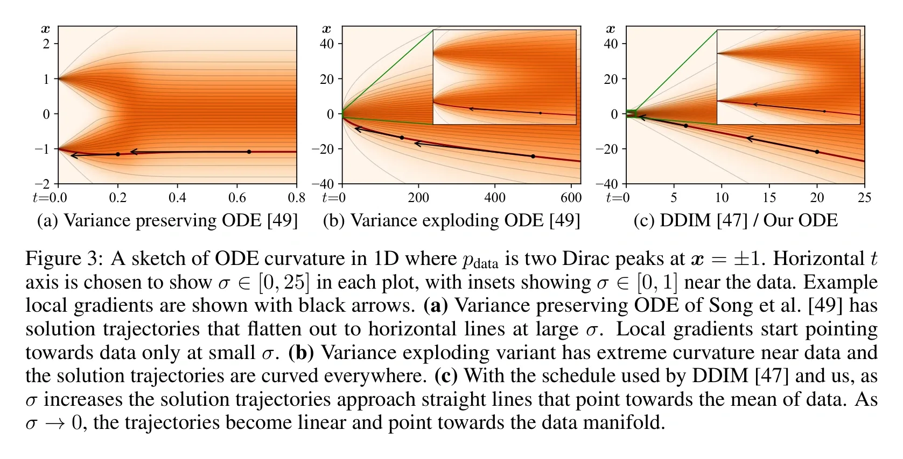
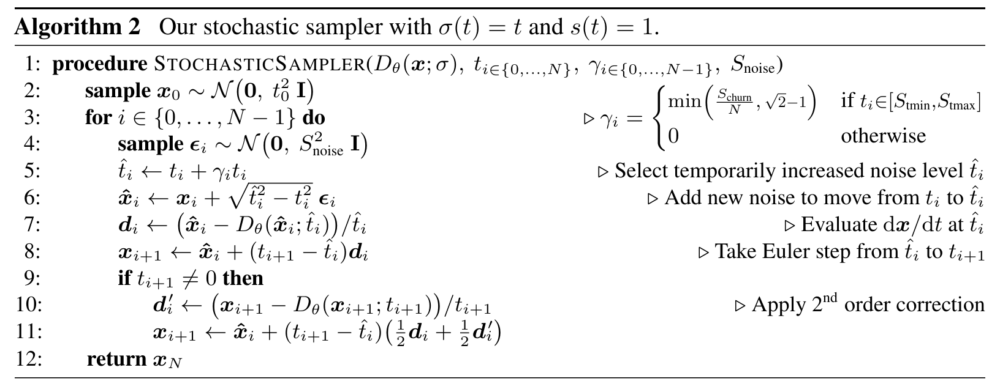
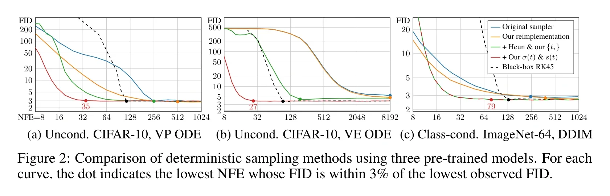
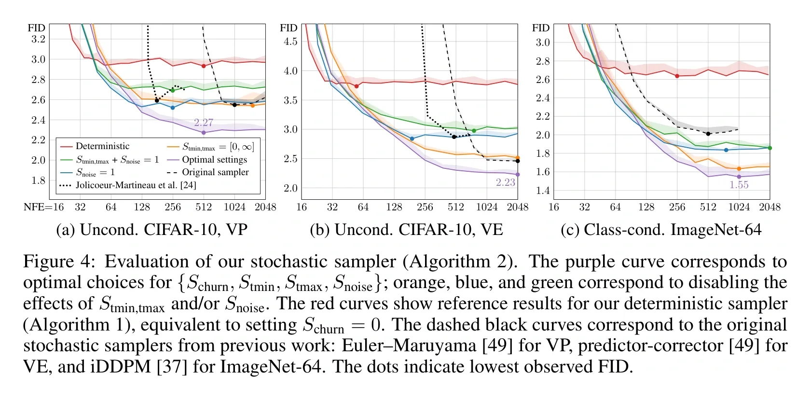
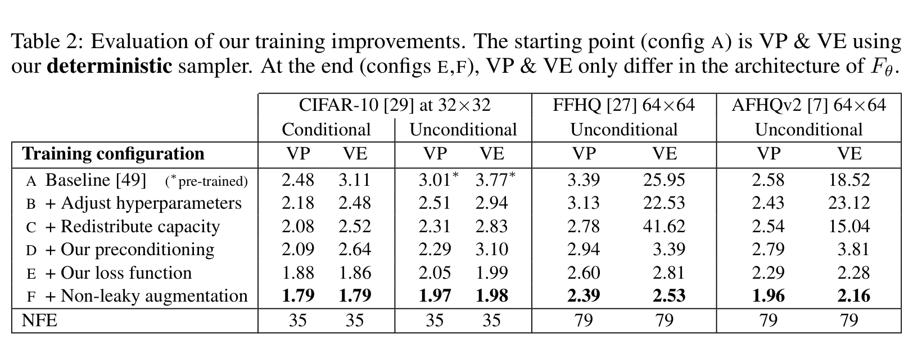

EDM：重新梳理扩散模型的设计空间
论文信息
- 标题：Elucidating the Design Space of Diffusion-Based Generative Models
- 作者：Tero Karras, Miika Aittala, Timo Aila, Samuli Laine
- 单位：NVIDIA
- 发表：NeurIPS 2022
- 开源：https://github.com/NVlabs/edm
前五篇留下了什么问题
从 DDPM 读到 x-prediction，我们已经见过好几种从噪声生成图像的方式。DDPM 通常预测噪声，Score Matching 学习对数密度的梯度，Flow Matching 回归速度；DDIM 可以复用去噪网络，改变生成时的更新；JiT 又让网络先预测干净图像，再转换出速度。
这些量能够通过公式联系，但每篇文章关心的问题并不相同。DDPM 构造了逐步加噪与学习反向生成的方法；Score/SDE 将密度梯度和连续时间动力学连接起来；DDIM 展示了训练边际与生成路径之间的自由度；Flow Matching 研究怎样为整体向量场构造可计算的条件监督；x-prediction 则追问有限网络应该直接实现哪个函数，以及信息怎样到达输出。
因此，读完之后需要回答一个更整体的问题：我们究竟有多少种选择？改变其中一项，会不会连其他项也一起改变？
例如，将网络输出从噪声改成干净图像，不必同时把随机采样改成确定性采样；将 Euler 换成 Heun，也不必重新训练网络。另一方面，同一组变量虽然能换算，直接输出、误差权重和网络信息通路仍可能影响优化。我们需要一套能把这些变化明确写出来的共同语言。
EDM 解决什么问题
2022 年，NVIDIA 的 Tero Karras 等人发表了 Elucidating the Design Space of Diffusion-Based Generative Models，简称 EDM。论文在引言中指出，不同方法的理论推导容易把噪声参数化、训练和采样呈现为一个紧密捆绑的整体，使读者难以看出哪些部分可以单独调整。#Karras-et-al.-2022-EDM
EDM 的办法是先找共同接口：在给数据加入不同强度的高斯噪声后，训练一个依赖噪声水平的去噪器。已有模型可以通过适当的输入输出换算接到这个接口上。随后再分别研究：怎样缩放网络输入和输出、怎样安排训练噪声和损失，以及怎样以更少的网络评估完成采样。#Karras-et-al.-2022-EDM
这个接口不是要求所有原始网络都直接输出图像。去噪器可以包含主网络之外的缩放、跳连和换算；同样，选定一个去噪器，也没有唯一规定采样必须使用随机过程还是确定性过程。前一篇关于“网络输出、损失和采样”的区分，在这里成为组织整个系统的方法。
EDM 原文主要讨论高斯扰动下的去噪 Score Matching。Flow Matching、JiT 及其后续分析并不都在这篇 2022 年论文的研究范围内。本篇会借助共同数学关系把它们纳入系列总结；其中哪些是 EDM 的原始结论，哪些是结合后续论文作出的对照，将分别说明。
把生成系统拆成五个选择
先暂时不展开全部公式，可以把系统拆成以下五层：
| 层次 | 需要决定什么 | 前面见过的例子 |
|---|---|---|
| 概率路径与过程 | 各时刻的分布怎样变化，不同时刻怎样连接 | DDPM 前向链、连续扩散、高斯插值路径 |
| 网络输出 | 主网络直接预测什么量 | 干净图像、噪声、score、速度 |
| 训练目标 | 监督标签从哪里来，在哪个空间计算误差 | DSM、条件速度回归、加权去噪 MSE |
| 网络实现 | 如何缩放信号，哪些信息通过主干或旁路 | EDM 预条件、JiT 解析旁路、像素解码器 |
| 生成算法 | 如何从初始噪声得到有限步样本 | DDPM 更新、DDIM 更新、Euler、Heun、churn |
这五层相互联系。概率路径决定可用的训练标签和换算系数；网络输出与外部换算共同决定用于生成的向量场；误差权重和网络结构又影响这个场能学得多准确。因此，拆分是为了看清依赖关系，并不意味着任意组件都能无条件互换。
flowchart TD A["概率路径与过程"] --> B["构造训练标签与变量换算"] B --> C["网络输出与训练损失"] D["网络实现：预条件、主干与旁路"] --> C C --> E["学到的预测函数"] E --> F["生成动力学与离散更新"] A --> F G["噪声节点、求解器与可选随机扰动"] --> F F --> H["从初始噪声生成样本"]
图 1：从概率路径到生成算法。路径为训练提供监督及换算关系，网络实现影响学习，生成时再把预测量接入选定的动力学和数值更新。图中表示各层之间的依赖，不是要求训练时数值求解整条生成轨迹。
原论文 Table 1 把 VP、VE、iDDPM 配合 DDIM，以及作者提出的 EDM 配置并列，分别列出采样器、噪声日程、网络预条件和训练权重。这张表的意义，是展示一个方法可以拆成哪些具体选择。#Karras-et-al.-2022-EDM

这套框架怎样帮助我们比较方法
先看一个已经熟悉的例子。DDPM 与 DDIM 可以使用同一个噪声预测网络，但生成时的转移公式不同。这说明训练得到的预测函数，并没有把生成算法完全锁死。原始 DDPM 使用相邻步更新；若要跨步，也需要重新构造对应转移，不能仅删除若干次网络调用。
再看 x-prediction。网络可以直接预测干净图像，用速度空间的损失训练，并通过 ODE 生成。这里改变的是主网络输出及其与解析运算的分工，生成系统仍然使用速度场。能作代数换算，也不保证一个同宽网络直接预测速度时同样容易学习。
EDM 在此基础上让我们继续问：即使概率模型和骨干大致不变，输入输出的数值尺度是否合适？训练是否把大量计算放在收益较小的噪声区间？生成时的误差来自网络本身，还是来自离散步长与求解器？加入新的随机扰动究竟改善了什么，又会造成什么退化？
这些问题将贯穿后文。下一章先建立共同的高斯概率路径，区分边际与跨时刻过程；再推导干净图像、噪声、score 和速度的关系。有了这两层基础，才能准确理解 EDM 的训练和采样改动。
先描述一个时刻的带噪图像
要比较这些方法，首先需要一套不会被某篇论文符号限制的记号。设干净数据为 $x_0\sim p_{\mathrm{data}}$，独立标准高斯噪声为 $\epsilon\sim\mathcal N(0,I)$。在时刻 $t$，构造
$a(t)$ 是干净信号的系数，$b(t)\ge0$ 是噪声的标准差系数。这里的 $x_0$ 始终表示干净数据，不强制它位于每种记号的时间零点；后面比较时会单独说明时间方向。
固定 $x_0$ 后，这个构造对应一个高斯条件分布：
它回答的是：“同一张干净图像在这个噪声水平上，可能变成什么样？”但生成模型面对的是整个数据集，所以还要把所有干净来源混合起来：
若数据分布没有通常意义下的密度，这里也可以理解为对数据概率测度积分。重要的是：条件分布描述一张图怎样被扰动，边际分布描述所有图像扰动后形成的整体分布。 在 $b(t)>0$ 时，高斯平滑使后者可以用平滑密度描述。
随着 $a,b$ 改变，我们得到一族 $\{p_t\}$，这就是本章所说的概率路径。它是一连串分布的变化，还没有告诉我们一个样本怎样从一个时刻移动到另一个时刻。#Karras-et-al.-2022-EDM #Lipman-et-al.-2023
边际相同，过程不一定相同
这是统一框架中最需要守住的区别。写下
时，如果只是为了在训练中随机抽一个时刻，我们只需要它给出正确的条件边际。不能据此认为原始加噪过程在所有时刻都使用同一份噪声。
可以看一个两个时刻的例子。固定同一个 $x_0$，令 $r\ne t$。一种构造共享噪声：
另一种构造在两个时刻独立采样：
在任意单个时刻，两种构造都给出相同的高斯条件分布。但给定原图后，两时刻之间的条件交叉协方差不同：
因此，同样的单时刻分布可以对应不同的跨时刻联系。第二种构造在这里仅用于说明边际不足以确定联合分布，并不被当作连续生成轨迹的设计。
DDPM、DDIM 与连续扩散之间的许多关系，都需要区分这两层：我们既可以保留每个时刻的分布，又重新选择跨时刻的过程。 不过，重新选择后仍须证明转移或向量场符合目标分布，不能随意连线就宣称得到正确生成算法。#Song-Meng-Ermon-2021-DDIM
DDPM 与连续扩散放在哪里
DDPM 的实际前向过程首先是一条离散马尔可夫链：
把前面各步的独立高斯扰动合并后，它的单时刻条件边际为
于是，在我们的共同记号中，
直接用 $z_k=a_kx_0+b_k\epsilon$ 生成训练输入，是把整条链在这个时刻的结果一次采样出来。它与逐步前向加噪有相同的条件边际，却没有把原链的全部跨时刻关系写出来。#Ho-et-al.-2020
连续时间 VP 扩散把类似的衰减与加噪写成 SDE。采用干净到噪声的时间 $\tau$，有
其高斯条件边际对应
这里 $W_\tau$ 是标准布朗运动。VP（variance preserving，方差保持）中 $a^2+b^2=1$；若数据分量方差为 1，扰动后的分量方差也保持为 1。它不意味着任何未归一化数据的方差都不变。#Song-et-al.-2021-SDE #Karras-et-al.-2022-EDM
VE（variance exploding，方差爆炸）则保持信号系数为 1，让加性噪声尺度增大。若实际扰动标准差记为 $\nu(\tau)$，可写作
“方差爆炸”指其方差可以随噪声尺度持续增长，不要求在有限终点真的变成无穷大。具体 SDE 若从非零噪声水平起步，还须把初始平滑分布和后续累计噪声区分开，不能只凭日程名称把两者混成同一个量。#Karras-et-al.-2022-EDM
DDIM 保留了什么，改变了什么
DDIM 保留 DDPM 的条件边际：
所以，训练仍可从同一张图像、同一个时间和独立高斯噪声构造输入，复用已有的噪声预测网络。但 DDIM 不要求前向联合分布仍等于 DDPM 的那条马尔可夫链，而是构造另一族联合过程和相应的生成更新。#Song-Meng-Ermon-2021-DDIM
这样，DDPM 与 DDIM 在本章的 $a_k,b_k$ 表中占据同一行，却不代表它们是同一个采样算法。DDIM 的贡献恰好说明：单时刻训练边际相同，并不把生成时的跨步转移锁死。 跨步更新如何构造，仍要使用前面 DDIM 篇推导的公式，而不能从“边际相同”直接跳到“任意跳步都正确”。
从采样看 SDE 与 ODE
原始 DDPM 使用随机反向采样，具有反向 SDE 的连续时间解释；确定性 DDIM（$\eta=0$）不再逐步注入新噪声，具有特定坐标下的 ODE 解释。两者可以复用同一个训练好的噪声预测网络。#Karras-et-al.-2022-EDM #Ho-et-al.-2020 #Song-et-al.-2021-SDE #Song-Meng-Ermon-2021-DDIM
这是典型采样方式的对照，不是将两个方法永久绑定到两类微分方程。原始采样公式都是离散更新；DDPM 预测器可以转换为 score 后接入 PFODE，DDIM 的广义过程族也允许随机更新。训练得到的预测函数、生成动力学与离散采样器，需要分开讨论。
同样，是否加入新噪声不能单独解释跳步：随机采样也可以重新构造跨步转移，确定性 ODE 的大步长也会引入误差。DDIM 的少步能力来自有依据的跨时刻更新；EDM 则继续比较噪声坐标、计算节点、求解器和随机扰动各自的影响。
Flow Matching 怎样接入
Flow Matching 不限于高斯路径；本篇先讨论能与扩散直接对照的一类：独立噪声与数据之间的高斯条件插值。沿用前两篇从噪声到数据的时间方向，线性例子是
在共同记号中，它只是 $a(t)=t$、$b(t)=1-t$。给定一对端点 $(x_0,\epsilon)$，这个构造还指定了一条直线条件轨迹；对其求导，可以得到训练用的条件速度。总体模型要学习的速度则要对潜在来源取条件平均，因此它实际生成的轨迹不必也是直线。#Lipman-et-al.-2023 #Liu-et-al.-2023-RF #Li-He-2025-JiT
这里要分清两层用途：只看 $a,b$，可以比较每个时刻的分布；固定端点对并求导，才进一步引入了可计算的条件运动与监督标签。前者用于本章统一路径，后者在预测目标和训练目标两章展开。
如果改变噪声与图像的配对，例如通过 reflow 重新耦合端点，就不能再直接沿用“图像与噪声独立”这一假设。两端的边际即使不变，中间条件分布也未必仍是这里的简单高斯核。下面的统一是有明确适用范围的，并不覆盖任意 Flow Matching 或 Rectified Flow 路径。
换到 EDM 的噪声坐标
以上几种路径看起来不同，一个原因是信号系数也在变化。只要 $a(t)>0$，就能把它除出去：
定义新的噪声水平
便得到 EDM 使用的加性噪声形式：
在 EDM 原文的写法中，外部信号缩放为 $s(t)$，这里对应 $s(t)=a(t)$。论文用 $s(t)$ 与 $\sigma(t)$ 拆开信号缩放和相对噪声水平；原图像尺度下的扰动分布记作 $p(y;\sigma)$。#Karras-et-al.-2022-EDM
这是一项坐标变换。$z_t$ 与 $y_t$ 的数值和密度不同，不能只替换符号而不缩放输入；在 $d$ 维空间，它们的密度满足
其中 $a^{-d}$ 是缩放的雅可比因子。等式表明它们怎样对应，并不表示两套坐标中的密度数值相等。
现在就能把前面的路径放进一张表：
| 路径或坐标 | 信号系数 $a$ | 噪声系数 $b$ | EDM 相对噪声 $\sigma=b/a$ |
|---|---|---|---|
| DDPM / DDIM 边际 | $\sqrt{\bar\alpha_k}$ | $\sqrt{1-\bar\alpha_k}$ | $\sqrt{(1-\bar\alpha_k)/\bar\alpha_k}$ |
| 连续 VP 边际 | $a(\tau)$ | $\sqrt{1-a(\tau)^2}$ | $\sqrt{1-a(\tau)^2}/a(\tau)$ |
| 加性噪声形式 | $1$ | $\nu$ | $\nu$ |
| 独立端点线性 FM / JiT | $t$ | $1-t$ | $(1-t)/t$ |
表中 DDPM 与 DDIM 的对应来自原论文；线性 FM/JiT 一行是按同一坐标规则作出的跨论文整理，不是 EDM 原文中的额外模型家族。
以线性 FM 为例，$t=1/2$ 时 $\sigma=1$，$t=1/4$ 时 $\sigma=3$。越靠近噪声起点，相对于干净信号的噪声越强。这不要求 VP 的 $a^2+b^2=1$：线性 FM 的系数一般不满足这一归一化，却仍然可以在 $t>0$ 时换到加性噪声坐标。
这个变换也有边界：线性 FM 的 $t=0$ 处 $a=0$，不能直接相除；它在新坐标中对应 $\sigma\to\infty$ 的极限。EDM 实际从有限的 $\sigma_{\max}$ 开始，用高斯分布近似高噪声数据分布，而不是在数学上取无穷大的初始噪声。若想直接把 $\sigma$ 用作时间坐标，还需在讨论区间内具有合适的单调性。#Karras-et-al.-2022-EDM
图像被破坏，整体分布怎样变化
EDM 原论文 Figure 1 展示了这一共同对象：同一组 CIFAR-10 图像在不同加性噪声水平下的状态。左侧的图像逐渐失去可辨认结构，对应数据分布经过越来越强的高斯平滑。

同一张图的另一部分给出理想平方误差去噪器的输出。它综合所有可能的干净来源；当输入几乎不再提供区分来源的信息时，输出逐渐接近数据集平均，而不是自动选择一张确定的训练图像。

因此，概率路径为我们规定了一族逐渐平滑的分布；它没有要求高噪声处的一次去噪预测就等于最终生成图像。怎样利用这些预测把分布逐步搬回数据端，需要后面的生成动力学与采样算法。
本章可以收束为三句话：条件核规定一张图怎样被扰动；概率路径规定整体分布怎样变化；跨时刻过程规定样本怎样连接这些分布。 EDM 的坐标把多种高斯路径写成可对照的加性噪声形式，但并没有因此抹去它们的联合过程、训练和生成算法差异。
下一章将在同一个高斯条件核下，推导干净图像、噪声、score 与路径速度之间的换算。这时就能准确回答：哪些量是在描述同一时刻的信息，哪些量还依赖我们选择的时间方向与运动方式。
先区分样本标签和模型预测
上一章把多种方法写成了同一类高斯条件路径：
本章在 $a(t)>0$、$b(t)>0$ 且系数可微的区间讨论；需要更强条件的公式会另行说明。为缩短公式，在固定时间时将 $a(t),b(t)$ 简记为 $a,b$。
训练时，我们知道采样出的 $x_0,\epsilon$，所以能构造标签。推理时，网络只看到当前位置 $z$ 和时间 $t$。由于不同端点对可能产生相同的中间状态，平方误差的最优预测一般是条件平均。分别记
$m_t$ 是理想干净预测，$e_t$ 是理想标准噪声预测。对路径等式取条件期望，得到全文换算的第一个约束：
因此，干净预测和噪声预测之间满足
这些等式没有说模型找回了制造输入时唯一的一份原图和噪声。它们说明：在同一个状态上，两种理想条件平均彼此约束。 实际网络若分别训练，有限容量与误差可能使两种输出并不完全相容。#Ho-et-al.-2020 #Lipman-et-al.-2023 #Li-He-2025-JiT
Score 怎样从去噪预测中得到
Score 是整体带噪分布的对数密度梯度，记为
它不是图像质量的打分，也不是当前状态的移动速度。为了把它与预测量连接起来，先对已知的高斯条件核求导：
这里的 $b^2$ 来自高斯协方差。随后，对所有可能的干净来源取后验平均。交换微分和积分所需的条件满足时，由边际化及贝叶斯公式可得
再利用 $z-a m_t=b e_t$，便得到
反过来，从 score 得到干净预测：
这就是本篇需要的广义高斯去噪关系。它把 DSM、噪声预测和干净图像预测接起来：在同一个高斯扰动核下，它们指向相互换算的理想预测函数。#Karras-et-al.-2022-EDM #Song-et-al.-2021-SDE
注意噪声的符号：预测噪声指向需要从当前状态中消去的扰动成分，因此 score 与它有一个负号。也要区分分母：噪声预测换 score 除以 $b$，干净预测换 score 除以 $b^2$。
速度还需要路径怎样变化
Score 描述当前密度往哪个方向增加；速度描述我们选择的运动怎样随时间推进。要得到后者，还需要对路径系数求导。
先固定独立采样的端点对，定义条件轨迹
其条件速度标签为
对所有可能来源取条件平均，得到这类条件路径对应的整体速度场：
这里的 $U_t$ 是训练样本对的速度，$u_t$ 是模型在平方损失下要学习的整体场。前面 Flow Matching 篇利用连续性方程说明，这个条件平均场能搬运对应的边际分布；它不要求整体生成轨迹仍沿每个训练端点对的直线移动。#Lipman-et-al.-2023
将 $e_t=(z-a m_t)/b$ 代入，可把速度写成干净预测的函数：
为了整理公式，定义系数矩阵的行列式
于是，速度可以有三种等价写法：
最后一行说明：score 要转换为速度，还需要位置项、路径系数及其时间导数。 同一个时刻的密度本身，并没有告诉我们生成时钟走多快。
这里选定的是上述高斯条件轨迹诱导的速度场。单凭一族边际密度，一般不能唯一决定所有可能的搬运场；也不能直接把这个 $u_t$ 当作原始随机 SDE 样本轨迹的导数。布朗路径通常不可微，而这里是在构造确定性的分布搬运速度。它何时与某个扩散过程的 PFODE 一致，第七章再说明。
从速度怎样反推其他量
上面的推导也可以反过来。将位置和速度同时写成矩阵方程：
只有当 $\Delta\ne0$ 时，这个矩阵才可逆。此时
如果 $\Delta=0$，位置和速度提供的两条约束线性相关，便不能用它们唯一解出两个条件平均。例如信号与噪声系数仅以同一比例整体缩放，速度可能只重复提供“当前状态怎样缩放”的信息。
将常用入口整理成一张表：
| 已知理想预测 | 干净预测 $m_t$ | 噪声预测 $e_t$ |
|---|---|---|
| 干净预测 $m_t$ | $m_t$ | $(z-a m_t)/b$ |
| 噪声预测 $e_t$ | $(z-b e_t)/a$ | $e_t$ |
| Score $s_t$ | $(z+b^2s_t)/a$ | $-b s_t$ |
| 路径速度 $u_t$ | $(\dot b z-bu_t)/\Delta$ | $(a u_t-\dot a z)/\Delta$ |
表中默认 $a,b>0$，速度行还要求 $\Delta\ne0$。得到 $m_t,e_t$ 后，分别用 $s_t=-e_t/b$ 与 $u_t=\dot a m_t+\dot b e_t$ 恢复其他量。这样比把全部换算塞进一张很宽的表更容易检查。
对于实际模型，可以把某一列作为直接输出，再用这些关系定义其余估计。定义出来的量在代数上相容，但它们是否接近真实条件平均、score 或整体速度，仍取决于模型误差。
VP 的 v 为什么不是通用速度
扩散文献常见的 $v$-prediction 采用另一种线性组合。对满足 $a^2+b^2=1$ 的 VP 系数，定义样本标签
它与加噪关系合起来是一组旋转：
由于矩阵正交，逆矩阵就是转置。若模型直接输出 $\hat v$，可以定义
进一步得到 score 估计
这些是 VP 参数化特有的简洁公式。#Salimans-and-Ho-2022 它们并没有使用时间导数，所以不能只凭 $v$ 这个字母，就把它当作 $\mathrm dz/\mathrm dt$。
什么时候它又确实与路径速度有关？令
对固定端点的轨迹求导：
因此，对整体场有
两者相差一个由时钟决定的因子；只有使用相应的角度作为时间坐标时，才得到直接相等的形式。反转时间方向还会改变符号。VP 的 v 是输出参数化，路径速度则依赖系数如何随时间变化。
线性 Flow Matching 与 JiT 的特例
沿用从噪声到数据的时间方向，令
此时 $\Delta=-1$，样本速度是 $U=x_0-\epsilon$，整体速度为 $u=m-e$。代入通用公式得到
前两行可以直接验证：$z=t m+(1-t)e$，再联立 $u=m-e$，即可消去其中一个未知量。后两行分别把干净预测转换为速度和 score。
这就解释了 JiT 为什么能直接预测图像，同时仍然进行速度场采样：网络输出 $\hat x_0$，外部构造 $\hat u=(\hat x_0-z)/(1-t)$。这里的 $u$ 对应 JiT 原文所记的 $v$，但并不等于上一节的 VP 参数化。#Lipman-et-al.-2023 #Li-He-2025-JiT
同样要注意端点：$t=1$ 处噪声系数为零，不能直接计算这些含 $1/(1-t)$ 的式子；实际截断、终点输出和求解处理不能由形式上的换算省略。
EDM 去噪器怎样接到这些量
最后回到 EDM 的加性噪声坐标。上一章令 $y=z/a$、$\sigma=b/a$，得到
固定 $\sigma$，理想去噪器是
用 $e_\sigma(y)$ 表示这个坐标下的标准噪声条件平均，用 $s_\sigma(y)$ 表示相对于 $y$ 的 score，便有
若把 $\sigma$ 本身作为时间坐标，则条件轨迹 $y_\sigma=x_0+\sigma\epsilon$ 对 $\sigma$ 的导数是 $\epsilon$，对应的条件平均速度为
这里“速度等于噪声预测”成立，是因为我们选了加性噪声坐标，并以噪声标准差 $\sigma$ 为时钟。它不能直接推广到任意 $a(t),b(t)$。生成时 $\sigma$ 递减，负的步长会使状态朝去噪估计移动；速度表达式的正负要与积分方向一起理解。#Karras-et-al.-2022-EDM
坐标变换也会改变 score。固定时间，上一章的密度缩放关系给出
因此，模型若在 $z$ 坐标接收归一化输入，不能把它输出的 score 数值原封不动当成 $y$ 坐标中的 score。模型接口、位置坐标与噪声定义必须成套匹配。
在有限网络下，把 $D^*$ 换成 $D_\theta$，就能构造相应的噪声、score 和采样速度估计。至于 EDM 内部主网络 $F_\theta$ 是否直接输出这个 $D_\theta$，答案还取决于外部预条件；第五章将拆开说明。
本章统一了四类对象：干净图像与噪声是条件估计，score 是当前密度梯度，路径速度是选定运动的时间变化率。 在高斯条件路径和相应非退化条件下，它们能互相转换，但不能因此混用名称。
接下来还必须回答：既然理想预测函数可以转换，为什么训练结果不同？下一章会把这些关系代入误差，推导不同损失的权重，再讨论有限网络的信息保存责任怎样改变学习难度。
一个已知标签，怎样学到未知的整体函数
上一章说明，在同一条高斯路径上，干净图像、噪声、score 与速度可以换算。但训练时，我们并没有预先知道整体分布的 score，也没有一个现成的整体速度场可供查询。真正知道的是自己抽取的干净图像、噪声与时间。
这正是 DDPM、DSM 与条件 Flow Matching 的一个共同点：利用可计算的样本标签，学习给定带噪状态后的整体条件平均。 它们构造标签的理由各有不同，但可以先用同一个平方误差恒等式理解监督为何有效。
设 $Y$ 是某种训练标签，模型输入为 $z_t,t$，理想回归函数为
把预测误差拆成两部分：
展开平方并取期望，交叉项消失，因为给定输入后，$f_\theta-\bar Y$ 已确定，而 $\mathbb E[\bar Y-Y\mid z_t,t]=0$。于是
后一项不依赖模型参数。因此，只要相关期望与求导条件成立，用样本标签训练，与直接回归其未知条件平均具有相同的总体参数梯度。两种损失的数值并不相同，小批量梯度也仍有抽样波动。
这个恒等式将帮助我们把前几篇的监督放到一张图景里；它并不意味着这些方法最初都从同一种推导出发。
DDPM：从反向转移得到噪声损失
DDPM 首先学习离散反向生成转移。变分下界中的中间项比较真实后验与模型反向分布：
在固定反向方差的高斯参数化下，参数相关部分成为均值平方误差。再将均值写成噪声预测的函数，便得到
这里 $\alpha_k=1-\beta_k$，$\varsigma_k^2$ 表示选定的反向方差，用不同符号避免与前向噪声系数混淆。原论文常用的简化目标则直接采用均匀时间抽样与无额外权重的噪声误差：
简化目标改变了不同时间步之间的权重，不能把它与完整变分目标逐项视为同一个数值函数。本章重点比较其噪声回归部分；重建端项、先验项以及学习方差的扩展并未被这一行公式全部概括。#Ho-et-al.-2020
给定 $z_k,k$ 后，最优噪声回归是 $e_k(z_k)$。上一章证明 $s_k=-e_k/b_k$，因此 DDPM 的预测器也能提供 score 估计。这是目标之间的数学联系，并不要求 DDPM 原论文先以连续 SDE 为出发点。
DSM：用条件 Score 学整体 Score
对高斯核 $q_t(z\mid x_0)=\mathcal N(a x_0,b^2I)$，训练时的条件 score 标签可以直接计算：
而未知的整体 score 是其后验平均：
于是，可以训练
若 $w_s$ 只依赖时间，条件平均恒等式给出
$C_s$ 与参数无关。因此，DSM 不需要先估计整份数据分布的密度，再对它求导；已知的高斯扰动就能提供训练标签。#Song-et-al.-2021-SDE #Karras-et-al.-2022-EDM
若用噪声网络定义 $s_\theta=-\epsilon_\theta/b$，则逐样本误差还满足
因此，无额外权重的噪声损失，对应权重为 $b^2$ 的条件 score 损失。在相同路径与相同时间抽样下，这样才是精确的损失对应；直接把两个无权重 MSE 放在一起，它们通常不同。
Flow Matching：用条件速度学整体速度
仍固定同一组独立端点与高斯条件轨迹，已知的速度标签是
它对应的整体速度为 $u_t(z_t)=\mathbb E[U_t\mid z_t,t]$。条件 Flow Matching 训练目标是
应用同一个平方误差恒等式：
这正是可计算的条件监督与未知整体流匹配之间的桥梁。训练一次只需抽端点与时间，计算当前状态和标签；不需要为这一步训练先数值求解整条生成 ODE。#Lipman-et-al.-2023
因此，DSM 与 CFM 在这里有相似的监督结构：前者平均条件密度梯度，后者平均条件速度。但条件标签由不同对象定义，最终对应的整体函数也不同；对于非高斯路径或重新耦合的端点，不能直接沿用本章全部标签换算。
把不同损失换到同一把尺子上
现在固定同一个训练样本、同一条路径，并让网络直接输出干净估计 $\hat x_0$。用上一章的公式构造其余预测，而不是另训几套独立网络：
令干净误差 $\delta x=\hat x_0-x_0$。因为真实样本与预测量满足相同的线性约束，相减后输入项抵消：
这里第二行比较的是模型 score 与已知的条件 score 标签，不是逐样本拿未知整体 score 作标签。由此得到：
| 误差空间 | 与同一组干净预测误差的关系 |
|---|---|
| 干净图像 | $\|\hat x_0-x_0\|^2$ |
| 标准噪声 | $(a^2/b^2)\|\hat x_0-x_0\|^2$ |
| 条件 Score | $(a^2/b^4)\|\hat x_0-x_0\|^2$ |
| 路径速度 | $(\Delta^2/b^2)\|\hat x_0-x_0\|^2$ |
对 VP 的 $v_{\mathrm{VP}}=a\epsilon-bx_0$，还可以把 $\hat\epsilon$ 代入，利用 $a^2+b^2=1$，得到
因此 VP v 误差对应的系数为 $1/b^2$。这是 VP 归一化条件下的结果，不能套用到任意线性 FM 系数。#Salimans-and-Ho-2022
这张表的含义是：在同一计算图上，预测量的换算会把一种误差精确变成另一种加权误差。 这些逐样本等式也包括了标签本身的条件不确定性；与“整体回归目标差一个常数”的解释相互兼容，但不是同一条等式。
JiT 的选择：预测图像，优化速度
线性 FM 路径中 $a=t$、$b=1-t$、$\Delta=-1$，所以
JiT 可以直接输出干净图像，再换成速度计算损失。这等价于对干净误差施加上述时间权重，并不等于无权重的干净图像 MSE。#Li-He-2025-JiT
对照噪声损失，则有
两种损失的时间系数不同。即使使用同一条路径、相同的干净输出，也不能把“训练速度”和“训练噪声”直接当成相同目标。

公式还必须与实际端点实现匹配。以上使用未截断分母；若实现截断 $1-t$，就需要按截断后的预测和标签重新推导权重。不能一边修改除法，一边仍声称完全等于理想速度损失。
时间抽样也是训练目标的一部分
除了误差空间，还要问各个时间出现多频繁。设训练时间密度为 $\pi(t)$，误差的额外权重为 $w(t)$，则目标可写成
所以模型面对的训练分配由时间抽样与损失权重共同决定。两个方法即使写着相同的 MSE，只要 $\pi$ 不同，也可能优化不同的总体目标。
换时间坐标时，还要变换密度。例如在单调可逆区间，令 $\sigma=\sigma(t)$，则
这意味着“均匀抽时间”和“均匀抽噪声标准差”不是同一个选择。对于离散 DDPM，则由各时间步的抽样概率与权重共同决定求和中的贡献。
从总体期望看，可以通过重要性权重在适当条件下补偿抽样分布的改变；但这不保证小批量梯度方差、数值稳定性与实际训练效率也相同。EDM 后面采用的噪声分布，需要与其损失和预条件一起理解。#Karras-et-al.-2022-EDM
为什么统一公式仍不能保证同样好学
现在能更准确地区分两种“换目标”。第一种只是对同一网络的损失作代数重写。例如，将图像输出换成速度再计算误差，与直接按推导出的时间权重计算图像误差，二者在相同计算图、相同端点处理下，函数值与参数梯度一致。
第二种却是把原有主网络改成直接输出另一种量。对线性 FM，可以比较
这两种实现都输出速度，却使用不同的参数化与信息通路。第二个实现把输入相关项交给解析旁路，主干只需形成干净估计；第一个若没有独立通路，就要在内部保留足够信息来完成整个速度预测。
即使在理想无限函数空间中，两种写法能对应相同的整体速度，它们也未必在固定宽度、固定训练预算下同样容易实现。前一篇 x-prediction 中的 JiT 与残差流实验讨论的正是这个差别。统一换算没有消除网络容量、表征或优化问题。#Li-He-2025-JiT
同理，某个时间上的正标量权重，不改变无限函数空间中该时间的条件均值最优解；但实际网络用同一组有限参数同时拟合多个时间，权重会影响它在不同区域之间如何分配能力。
EDM 将从哪里继续改进
EDM 的共同去噪目标写成
至此，我们已经知道其中三项责任：$D_\theta$ 规定去噪接口，$\lambda$ 规定误差权重，$p_{\mathrm{train}}$ 规定噪声级出现的频率。但主网络并不一定直接实现 $D_\theta$；外部预条件还会改变它实际回归的目标与误差尺度。#Karras-et-al.-2022-EDM
因此，前几种方法可以按监督来源与理想函数作如下总结：
| 典型训练方式 | 可以直接构造的标签 | 对应的理想回归函数 |
|---|---|---|
| DDPM 噪声回归 | $\epsilon$ | $e_t(z)$ |
| 高斯 DSM | $-\epsilon/b$ | $s_t(z)$ |
| 高斯路径 CFM | $\dot a x_0+\dot b\epsilon$ | $u_t(z)$ |
| JiT 图像输出、速度损失 | 干净标签与速度标签，经解析换算比较 | 干净条件均值及对应速度，非退化时 |
| EDM 加权去噪 | $x_0$，噪声级为 $\sigma$ | $D^*(y;\sigma)$ |
这张表列出典型回归形式，不把完整 DDPM 变分目标、一般非高斯 FM，以及各种扩展训练都压缩成完全相同的算法。
本章的结论是：先明确路径，再明确标签、输出、误差空间、时间抽样与网络实现，才能判断两种训练究竟哪里相同、哪里不同。 可换算的理想函数提供了共同框架；具体的学习难度仍由这些选择共同决定。
下一章进入 EDM 的网络预条件，从输入方差、残差目标和误差放大出发，推导主网络 $F_\theta$ 怎样组成去噪器 $D_\theta$。这将把前面的抽象训练比较落实为一组具体系数。
为什么去噪器外面还需要一层变换
前面把不同预测目标统一到了去噪接口 $D_\theta(y;\sigma)$。但同一个网络要处理从接近干净图像到几乎纯噪声的输入，数值尺度相差很大。直接把这些输入交给主干、直接回归同一尺度的图像，并不是唯一选择。
EDM 的预条件（preconditioning）是在主网络前后加上依赖噪声级的确定性缩放与旁路，让主干接收的输入、需要回归的目标具有较稳定的尺度。它改变的是网络怎样实现去噪函数，不会另造一条概率路径。#Karras-et-al.-2022-EDM
继续使用 $y=x_0+\sigma\epsilon$，EDM 写成：
这里有两个不同层次：$D_\theta$ 对外提供干净图像估计；$F_\theta$ 是实际训练的主网络，其直接输出一般不是干净图像。四个系数的分工如下。
| 系数 | 作用 |
|---|---|
| $c_{\mathrm{in}}$ | 缩放带噪输入后送入主干 |
| $c_{\mathrm{noise}}$ | 把噪声级转换为主干的条件输入 |
| $c_{\mathrm{skip}}$ | 通过旁路保留输入的一部分 |
| $c_{\mathrm{out}}$ | 将主干输出缩放后加到旁路上 |
所以，判断 EDM 是什么 prediction，不能只看接口名称。需要把外部组合公式展开，看主干真正接受什么监督。
第一步：让输入方差保持稳定
为推导标量缩放，采用原文的方差近似：数据已适当中心化，每个分量用共同的代表性方差 $\sigma_{\mathrm{data}}^2$ 描述；标准高斯噪声与数据独立。它不要求图像本身服从高斯分布，也不表示所有像素的真实方差完全相同。
于是带噪输入的代表性方差为：
希望主干输入具有单位方差，就令：
高噪声时，输入主要除以噪声尺度；低噪声时，主要按数据尺度归一化。这里统一的是二阶尺度，并没有让不同噪声级的输入分布完全一致。#Karras-et-al.-2022-EDM
第二步：看清主干实际预测的残差
将预条件公式代入去噪误差，对 $\sigma>0$ 写出：
因此主干预测的是“干净图像减去输入旁路”以后，再经过归一化的残差。旁路负责一部分容易保留的信息，主干补足剩余部分。
若记 $k=c_{\mathrm{skip}}$，未归一化残差为：
由独立性，其方差为：
要让 $F_{\mathrm{target}}$ 具有单位方差，可以选择正的 $c_{\mathrm{out}}$，使 $c_{\mathrm{out}}^2=\operatorname{Var}(r)$。现在还差一个问题：旁路比例 $k$ 取多少？
第三步：选择旁路，减少输出误差的放大
同样大小的主干误差 $\delta F$，在去噪接口中成为 $\delta D=c_{\mathrm{out}}\delta F$。EDM 在目标单位方差这一约束下，选择使 $c_{\mathrm{out}}^2$ 最小的旁路比例。对上式求导：
于是：
二阶导数为 $2(\sigma_{\mathrm{data}}^2+\sigma^2)>0$，所以这是该标量方差问题的唯一最小值。#Karras-et-al.-2022-EDM
这与用标量线性估计器 $ky$ 估计图像时的最小均方误差系数相同。但自然图像不是高斯数据，真正的最优去噪器通常是非线性的；旁路只是提供一个线性起点，剩余结构仍由网络学习。这个局部推导也不是“所有网络中训练效果全局最优”的证明。
主干目标怎样随噪声变化
把两个系数代回 $F_{\mathrm{target}}$，得到更直观的形式：
这说明 EDM 的主干目标并非固定的纯 x 标签，也并非固定的纯噪声标签：
- 当 $\sigma\ll\sigma_{\mathrm{data}}$ 时，旁路接近保留整个输入，主干目标接近 $-\epsilon$，负责小幅去噪修正。
- 当 $\sigma\gg\sigma_{\mathrm{data}}$ 时，旁路衰减，主干目标接近 $x_0/\sigma_{\mathrm{data}}$，负责估计图像结构。
- 中间噪声级下，主干回归归一化图像与噪声的线性组合。
这些是 训练标签 的极限。网络只看到输入和噪声级，平方误差下学到的仍是这些标签的条件均值，不能因此认为它能精确恢复每一份未知噪声。
例如取 $\sigma=\sigma_{\mathrm{data}}$，则 $c_{\mathrm{skip}}=1/2$，目标为 $(x_0/\sigma_{\mathrm{data}}-\epsilon)/\sqrt2$。此时既不让主干完全复制输入，也不要求它独自承担全部输出。
四个系数与训练权重怎样衔接
EDM 使用的系数可以集中列成一张表：#Karras-et-al.-2022-EDM
| 系数 | EDM 取值 | 依据 |
|---|---|---|
| $c_{\mathrm{in}}$ | $1/\sqrt{\sigma^2+\sigma_{\mathrm{data}}^2}$ | 归一化输入方差 |
| $c_{\mathrm{skip}}$ | $\sigma_{\mathrm{data}}^2/(\sigma^2+\sigma_{\mathrm{data}}^2)$ | 最小化标量残差方差 |
| $c_{\mathrm{out}}$ | $\sigma\sigma_{\mathrm{data}}/\sqrt{\sigma^2+\sigma_{\mathrm{data}}^2}$ | 归一化残差目标 |
| $c_{\mathrm{noise}}$ | $\log(\sigma)/4$ | 原论文经验选择的噪声条件映射 |
前三个系数来自上述尺度要求，$c_{\mathrm{noise}}$ 的具体形式不由这些方差等式推出。原论文实验采用 $\sigma_{\mathrm{data}}=0.5$，它依赖图像数值尺度，不应脱离数据预处理照搬。#Karras-et-al.-2022-EDM
最后，将去噪损失写成主干残差损失：
EDM 取 $\lambda(\sigma)=1/c_{\mathrm{out}}(\sigma)^2$，从而抵消这里的显式尺度因子。它让主干残差损失的有效系数为 1；这不表示所有噪声级在实际训练中同等重要，因为噪声抽样频率、任务难度与梯度仍可能不同。下一章将单独解释噪声级怎样分配。#Karras-et-al.-2022-EDM
本章可以概括为：统一去噪接口解决函数之间怎样换算；预条件解决主干以什么尺度、通过哪些通路实现这个接口。 EDM 与前篇 x-prediction 的联系在于都需要区分接口、直接输出和解析旁路；两者的具体目标、结构与实验结论仍需分别讨论。
先区分频率与权重
上一章让主干输入与目标的代表性方差保持稳定，但训练还有一项资源分配问题：一次更新该抽到哪个噪声级？抽到以后，该样本的误差又应放大多少？
EDM 将两件事分开。$p_{\mathrm{train}}(\sigma)$ 决定噪声级出现的频率，$\lambda(\sigma)$ 决定去噪误差的权重。连同预条件，训练目标为：
因此，在这个积分测度下，去噪误差前面的总系数是 $p_{\mathrm{train}}\lambda$。改写到主干误差空间以后，它又成为 $p_{\mathrm{train}}\lambda c_{\mathrm{out}}^2$。只看其中一个系数，会误判哪些噪声级真正获得了更多训练。#Karras-et-al.-2022-EDM
损失权重先抵消预条件的尺度
由上一章的系数，EDM 选择：
这样每个样本的加权去噪误差正好等于归一化残差误差：
低噪声时 $\lambda$ 很大，并不意味着主干一定承受发散的监督尺度：$c_{\mathrm{out}}$ 同时变小，两者在上式中精确抵消。公式用于 $\sigma>0$；训练不直接把 $\sigma=0$ 代入这些含倒数的表达式。
原文还采用主干输出层零初始化。在第五章的方差近似下，归一化标签每分量的二阶矩为 1，因此初始化时每个噪声级的期望损失都约为 1；若使用各分量平方和而非平均，则应再乘分量数。这解释了原文 Figure 5(a) 的初始化基线，但不保证各噪声级的梯度范数或学习速度也相等。#Karras-et-al.-2022-EDM
为什么不把训练平均分给所有噪声级
权重消除了一个已知尺度差异，却没有消除任务本身的难度差异。可以从两端理解：
- 极低噪声：输入已经非常接近图像。主干标签接近负噪声，但要从单个近乎干净的输入中分辨微小随机扰动仍然困难。在原文实验中，这一端的归一化损失可改善空间有限；噪声幅度本身又很小。
- 极高噪声：输入几乎不提供原图信息。主干标签接近归一化图像，而平方误差的理想预测趋向数据均值，无法猜中训练时随机配对的具体图像。
- 中间噪声：输入保留一些结构，同时仍有显著破坏。模型可以利用这些结构减少不确定性，是原文观察到训练后损失下降最明显的区间。
这里不能把“高噪声损失较大”简单解释成模型能力不足。即使达到条件均值最优解，也存在第四章讨论过的不可约误差：
第二项来自输入不能唯一决定标签。高噪声时，这种不确定性尤为明显。原文据逐噪声损失曲线，将更多训练投入中间范围；这是一项有实验依据的资源选择，不是证明两端可以完全不训练。#Karras-et-al.-2022-EDM

用对数正态分布抽取噪声级
EDM 不是均匀抽取 $\sigma$，也不是在一段对数区间上均匀抽取，而是令对数噪声服从正态分布：
对应 $\sigma$ 的概率密度为：
$P_{\mathrm{mean}}$ 控制训练集中在哪个对数噪声范围，$P_{\mathrm{std}}$ 控制覆盖宽度。原论文 Table 1 使用 $P_{\mathrm{mean}}=-1.2$、$P_{\mathrm{std}}=1.2$，配合 $\sigma_{\mathrm{data}}=0.5$。这些是论文配置，不是不同数据尺度与模型下都成立的最优常数。#Karras-et-al.-2022-EDM
这里有一个读图细节：Figure 5(a) 的横轴是对数噪声。对数坐标中每单位区间的抽样概率由 $\ell=\log\sigma$ 的密度描述，而不是直接由 $p_{\mathrm{train}}(\sigma)$ 描述。两者满足：
所以不能把对数轴上画出的钟形曲线直接当成关于 $d\sigma$ 的密度，漏掉变量变换中的 $1/\sigma$。本配置下，$\sigma$ 的中位数为 $e^{-1.2}\approx0.30$，也不应把它误称为 $\sigma$ 密度的峰值。
一次训练具体做什么
将前两章组合，一次 EDM 训练更新可以写成下面的教学伪代码。它整理自原文目标与配置，不是论文中的算法截图。#Karras-et-al.-2022-EDM
抽取训练图像 x0
抽取 g ~ N(0, 1)，令 sigma = exp(P_mean + P_std * g)
抽取 epsilon ~ N(0, I)，令 y = x0 + sigma * epsilon
按 sigma 计算 c_in、c_skip、c_out、c_noise
F = F_theta(c_in * y, c_noise)
D = c_skip * y + c_out * F
loss = mean((D - x0)^2) / c_out^2
对模型参数反向传播并更新实际小批量中可以为每张图像分别抽取噪声级；这里仅展开基础去噪目标，未展开类别条件或增强正则化。它也可以等价地实现成主干对归一化残差标签的平方误差。
训练噪声分布不是采样时间表
训练中的噪声抽样与生成中的噪声级序列是两个不同问题：
| 选择 | 决定什么 | 是否必须按顺序执行 |
|---|---|---|
| $p_{\mathrm{train}}(\sigma)$ | 网络在哪些噪声级获得多少训练样本 | 否；每次可独立抽取 |
| $\lambda(\sigma)$ | 每个样本的去噪误差怎样加权 | 不规定生成顺序 |
| 推理序列 $\sigma_0>\cdots>\sigma_N$ | 生成时在哪些噪声级计算向量场 | 是；按求解器推进 |
训练时抽到某个 $\sigma$，直接构造 $x_0+\sigma\epsilon$ 就能监督，不需要先跑完整条轨迹。推理时则要沿学到的场逐步生成；节点怎样分配，需要考虑轨迹曲率与数值误差。因而，训练采用对数正态分布，并不要求生成也按该分布随机选步。#Karras-et-al.-2022-EDM
本章的结论是：预条件稳定尺度，损失权重抵消已知的输出缩放，噪声抽样分配训练频率。 三者共同作用，不能把 EDM 的训练改进只归为某一个权重公式。原文将预条件配置与随后加入的权重、噪声抽样分别做消融；完整实验结论将在末章结合 Table 2 讨论。
下一章回到生成：同一个去噪器怎样构造确定性 ODE 与随机 SDE，它们与前面 DDPM、DDIM 和 Flow Matching 的采样分别是什么关系。
去噪器并不等于采样器
训练结束后，我们得到 $D_\theta(y;\sigma)$。它接收当前状态和噪声水平，估计干净图像；但它没有规定下一步必须去哪、是否重新注入噪声、用多少次网络计算。
因此需要区分三个层次：
- 预测函数：去噪器、score 或速度场提供什么局部信息。
- 连续生成过程：选择哪条 ODE 或 SDE，将一族边际分布连接起来。
- 数值采样器：用 Euler、Heun 或其他离散算法，近似执行这个连续过程。
本章讨论第二层，下一章再讨论第三层。DDPM 和 DDIM 原始算法本身是离散过程；将它们放入连续框架，是为了理解关系，不能省略从连续方程到离散更新的区别。#Karras-et-al.-2022-EDM #Song-et-al.-2021-SDE #Song-Meng-Ermon-2021-DDIM
从去噪器得到概率流 ODE
继续使用 EDM 的加性噪声坐标：
这里描述的是每个噪声级的边际分布，尚未指定不同噪声级之间怎样配对。高斯平滑满足热方程：
若用时间 $t$ 控制噪声级，则：
另一方面，ODE $dy/dt=v(y,t)$ 通过连续性方程改变密度：
利用 $p\nabla\log p=\nabla p$，选择下面的速度，就能让这两个密度方程一致：
第三章已经得到 $s=(D^*-y)/\sigma^2$，因此用训练好的去噪器近似后：
这就是 EDM 在不额外缩放状态时使用的概率流 ODE。它不是要求主干直接训练成速度网络，而是把去噪输出解析换算成向量场。#Karras-et-al.-2022-EDM
为什么噪声减小时会朝干净图像移动
若直接以噪声水平作独立变量，取 $\sigma(t)=t$，方程成为：
右侧看上去指向“远离干净估计”的方向，但生成是从大 $\sigma$ 向小 $\sigma$ 积分。对负的噪声增量 $\Delta\sigma<0$，Euler 更新为：
例如 $\Delta\sigma=-0.1\sigma$，就得到 $y_{\mathrm{next}}=0.9y+0.1D_\theta$，实际移动方向是朝向干净估计。这里仅用 Euler 说明方向；具体误差与 Heun 修正留到下一章。
而且 $D_\theta$ 随当前状态和噪声级变化，不能把首次预测当作整条轨迹固定不变的终点。
确定性路径有什么作用
概率流 ODE 在运行时不再注入新的随机噪声。给定初始潜变量、模型和求解设置，生成结果就确定；不同初始噪声仍能生成不同样本，所以确定性不意味着没有多样性。
在向量场具有适当正则性、解唯一且可在所考察区间双向求解的条件下，ODE 在不同时间之间建立可逆的一对一映射。这提供了图像反演的基础：沿相反方向积分，寻找对应的噪声潜变量，再沿生成方向返回。#Karras-et-al.-2022-EDM #Song-et-al.-2021-SDE #Song-Meng-Ermon-2021-DDIM
但要区分连续理想过程与实际反演。有限步数、网络误差、条件改变以及接近零噪声时的正则性问题，都可能破坏精确重建。若数据严格集中于低维流形，也不能直接声称一个处处光滑可逆映射能在有限时间把全维高斯压成低维数据；前述可逆性更稳妥地适用于正噪声区间。
同一族边际也能由随机过程实现
既然 ODE 已能生成，为什么还需要 SDE？关键在于：边际分布并不唯一决定样本路径。可以在确定性搬运之外加入随机探索，同时调整漂移，使理想边际保持一致。
为了避免反向时间中的符号混淆，下面另设 沿生成方向递增 的时间 $r$，规定 $\sigma(r)$ 逐渐减小。记：
此时 ODE 的速度是 $\kappa s$。再取非负、只依赖时间的系数 $\eta(r)$，构造：
这里 $W_r$ 是沿 $r$ 的标准布朗运动；$\eta$ 是本章为说明随机强度引入的系数，不是 DDIM 的同名参数。相对于 EDM 原文的 Langevin 强度记法，它对应 $\eta=\beta\sigma^2$。#Karras-et-al.-2022-EDM
这个 SDE 不只增加噪声，还增加了一项沿 score 的漂移。两项为何需要配套，可以直接用 Fokker–Planck 方程核对：
它恰好等于目标高斯平滑分布的变化率。随机扩散与新增的 score 漂移在密度方程中抵消，剩下的仍是所需的分布搬运。因此，在真实 score、正确初始分布及适当正则条件下，不同 $\eta$ 可以得到同样的逐时边际；但单个样本走过的路径不同。
- $\eta=0$：概率流 ODE。
- $\eta>0$：在搬运同时进行 Langevin 式随机修正。
- $\eta=\kappa$：漂移为 $2\kappa s$，随机项为 $\sqrt{2\kappa}\,dW_r$，对应加性布朗加噪过程的反向 SDE。
这也解释了同一边际下，反向 SDE 与 PFODE 的 score 系数为什么通常相差一倍：SDE 还要补偿自身随机项造成的扩散。#Song-et-al.-2021-SDE #Karras-et-al.-2022-EDM
随机修正为什么可能有帮助
固定噪声级时，Langevin 项的目标是让分布朝该噪声级的目标密度调整。实际生成存在预测与离散误差，适度随机修正因此可能缓解先前积累的偏差。这是 EDM 对随机采样价值的解释。#Karras-et-al.-2022-EDM
它不保证每个样本都离某张原图更近，也不保证随机性越大越好：错误 score 会引入错误漂移，离散 Langevin 步本身也有误差，过量噪声还会损伤细节。原论文因此通过实验调节随机性，并提出 churn 的具体离散实现。下一章会说明 churn 怎样先提高噪声级，再用去噪步骤返回。
前面几种方法怎样放进来
| 方法 | 生成过程中的位置 | 需要保留的区别 |
|---|---|---|
| 原始 DDPM | 离散随机反向转移；有反向 SDE 的连续解释 | 原始更新系数由离散后验构造，不是直接把连续 SDE 当作其精确算法 |
| Score SDE | 由 score 构造反向 SDE，也可构造相同边际的 PFODE | 训练 score 不意味着只能随机采样 |
| 确定性 DDIM | 无新噪声的离散更新，在相应坐标下有 ODE 解释 | 广义 DDIM 可带随机性；跨步依据来自其转移构造 |
| Flow Matching | 直接回归边际速度场，用 ODE 生成 | 一般 FM 路径不必是高斯扩散路径 |
| EDM | 把已有预测器接到共同去噪接口，比较确定性与随机采样选择 | 预条件、训练分配、连续过程、数值求解器是不同层次 |
对第三章的高斯路径 $z_t=a(t)x_0+b(t)\epsilon$，CFM 理想速度已推导为：
除去信号缩放并改用 $\sigma=b/a$ 后，就回到本章的去噪器 ODE。这里统一的是这类路径的 理想边际速度；CFM 的条件训练标签、EDM 的预条件残差、以及两者的损失权重仍不相同。一般非高斯 Flow Matching 也不能仅靠一个高斯 score 换算公式概括。#Lipman-et-al.-2023
本章的结论是：同一个预测器可以服务于不同生成过程；同一族边际也可以由不同路径实现。 确定性路径方便复现与反演，随机过程提供额外的分布修正机制。两者是否能少步生成，还取决于数值求解，而不是由“有没有随机噪声”单独决定。
下一章将落实到 Euler、Heun、噪声节点与 churn，解释一次采样究竟怎样执行、为什么这些选择会改变计算量与误差。
先把一次生成的输入说清楚
上一章确定了连续向量场，本章将它变成有限次网络调用。采用 EDM 推荐的坐标：不额外缩放状态，直接以噪声水平 $\sigma$ 为独立变量。记：
生成从高噪声开始，沿递减序列 $\sigma_0>\sigma_1>\cdots>\sigma_{N-1}>\sigma_N=0$ 推进。通常取初值：
有限 $\sigma_0$ 下，真正的起点边际是数据加高斯噪声的卷积，并不严格等于这个纯高斯。只有当起始噪声远大于数据尺度时，二者才足够接近；这是实际采样的一个近似来源。#Karras-et-al.-2022-EDM
本章的 $N$ 表示从 $\sigma_0$ 到零的更新次数。一次更新可能调用网络两次，所以“采样步数”不能直接当作网络计算次数。
Euler：按当前方向走一步
在第 $i$ 步，先计算当前斜率，再用它近似整段运动：
它只调用一次去噪器，但默认这一段中的方向变化可以忽略。若轨迹弯曲明显，大步会偏离真实解。
特别地，若直接取 $\sigma_{i+1}=0$，则 $h_i=-\sigma_i$，Euler 更新恰好成为 $D_\theta(y_i;\sigma_i)$。这只是一次去噪估计；在高噪声处直接这样跳到零，通常无法获得多步生成的质量。能够写出跨越很远的更新，不代表其数值误差足够小。#Karras-et-al.-2022-EDM
Heun：试走以后再修正
Heun 是显式二阶方法，也称改进 Euler 法。它的思路是：先按当前方向试走，到预测的新位置再问一次网络，用首尾两个斜率的平均值更新。
当 $\sigma_{i+1}>0$ 时：
第二次调用必须使用 预测的新状态和下一噪声级，不能把同一个输入再算一遍；最后从原位置 $y_i$ 出发修正，也不是在试走结果上再走一个完整步长。
例如用一维数值说明：设 $y_i=2$、$\sigma_i=1$、$\sigma_{i+1}=0.5$，第一次去噪估计为 $D_\theta(2;1)=1$，于是 $d_i=1$，Euler 试走到 $1.5$。若网络在新位置给出 $D_\theta(1.5;0.5)=1.1$，则第二个斜率为 $0.8$，Heun 修正结果为：
这些数值仅为展示计算顺序；不能仅凭结果不同，就断定这个具体例子的 Heun 误差更小。
对足够光滑的向量场，在通常的稳定性条件下，Euler 的单步局部误差为 $O(|h|^2)$、全局一阶；Heun 的单步局部误差为 $O(|h|^3)$、全局二阶。这衡量对给定 ODE 的求解精度，不会消除网络对真实向量场的估计误差。#Karras-et-al.-2022-EDM

为什么最后一步不用 Heun
当下一噪声级为零时，第二次斜率计算会出现除以 $\sigma_{i+1}=0$ 的问题。EDM 因此在最后一步仅执行 Euler，不进行端点修正。#Karras-et-al.-2022-EDM
在没有额外模型调用的基本实现中，前 $N-1$ 步各调用两次网络，最后一步调用一次，所以：
例如 18 个更新对应 35 次网络调用。NFE 是神经网络函数评估次数；实际耗时还受模型大小、硬件、批量以及引导实现影响，不能跨不同实现只比较步数。
噪声节点怎样分配
即使固定为 Heun，仍要决定每步跨多远。EDM 在 $\sigma^{1/\rho}$ 坐标中均匀放置正噪声节点：
对于这里使用的 $\rho>1$，低噪声处的绝对步长更小，高噪声处允许更大步长。注意 $\sigma_{\min}$ 是最后一个 正 噪声节点，随后还要单独走到零。
原文分析中，$\rho=3$ 近似均衡单步截断误差，但图像实验中 $5$ 到 $10$ 更好，论文最终采用 $\rho=7$。作者据此认为低噪声误差对图像质量的影响更大：数值误差均衡，不等于感知质量最优。#Karras-et-al.-2022-EDM
Table 1 的 EDM 配置采用 $\sigma_{\min}=0.002$、$\sigma_{\max}=80$。这些数值依赖数据尺度与模型可用范围；调用已有模型时，必须适配其噪声支持范围，离散噪声模型还可能需要取到支持的噪声级。#Karras-et-al.-2022-EDM

Churn：先加一点噪声，再去噪
前述方法是确定性的。EDM 的随机采样在每步前增加一个短暂的加噪阶段，称为 churn。给定 $(y_i,\sigma_i)$，先提高噪声级：
随后以 $(\widehat y_i,\widehat\sigma_i)$ 为新起点，用刚才的 Heun 更新走到 $\sigma_{i+1}$。也就是说，本次去噪步长变为 $h_i=\sigma_{i+1}-\widehat\sigma_i$，第一、第二次斜率都按这段新的运动计算；并不是先用旧状态预测，再随意把噪声补到结果上。#Karras-et-al.-2022-EDM
当 $S_{\mathrm{noise}}=1$ 且输入确实服从 $p(\cdot;\sigma_i)$ 时，独立高斯方差相加：
因此加噪子步准确到达更高噪声边际，再由 ODE 近似搬运回较低噪声。这是该算法的分布依据，不是重新训练，也不是 Rectified Flow 的 reflow。原文强调它是针对该问题设计的交替采样程序，而不是通用 SDE 求解器。

Churn 的四个参数控制什么
原论文令：
| 参数 | 作用 |
|---|---|
| $S_{\mathrm{churn}}$ | 控制总体随机扰动强度；为零时回到确定性采样 |
| $S_{\min},S_{\max}$ | 只在指定噪声区间启用 churn；不同于整个采样的 $\sigma_{\min},\sigma_{\max}$ |
| $S_{\mathrm{noise}}$ | 缩放新增噪声，原文发现略大于 1 有时能改善结果 |
当 $S_{\mathrm{noise}}=1$ 时，$\gamma_i\le\sqrt2-1$ 保证本次新增噪声方差不超过当前噪声方差。若把 $S_{\mathrm{noise}}$ 调大，实际新增方差还要乘其平方，不能继续无条件声称满足同一个上界。
同样，$S_{\mathrm{noise}}>1$ 时，实际加噪量不再严格对应标记的 $\widehat\sigma_i$；这是原论文针对实际模型偏差采取的经验调整，应与上面的理想边际论证分开。#Karras-et-al.-2022-EDM
适当随机性可能改善质量，但过多 churn 会损失细节、带来颜色过饱和。四个参数需要根据模型和数据调节，不能认为随机版普遍优于确定性版。#Karras-et-al.-2022-EDM
怎样判断采样改进来自哪里
现在可以将采样决策分开检查：
| 决策 | 改变什么 | 主要代价与边界 |
|---|---|---|
| Euler 换成 Heun | 更准确地近似同一个 ODE | 通常每步多一次网络调用 |
| 改噪声节点 | 将有限计算分配到不同噪声区间 | 不同位置的误差对质量影响不同 |
| 改坐标与连续日程 | 改变求解轨迹的参数化与数值性质 | 需要正确变换状态和预测接口 |
| 加入 churn | 引入随机刷新与额外去噪 | 有机会纠偏，也会引入离散误差与细节损失 |

本章的结论是：少步采样不是仅把时间点删掉，而是要选择合适的连续场、坐标、节点与求解器，并控制模型误差和离散误差。 Heun、节点分配与 churn 各自解决不同问题；它们都能在不把主干改成直接速度预测器的情况下使用去噪接口。
下一章回到实验与整篇总结，将只改采样器、重新训练模型的证据分开，并说明 EDM 统一框架的适用边界。
先分清实验改了什么
EDM 的实验回答两类问题：不改网络、只换采样设置，是否能改善已有模型？重新选择网络预条件与训练分配，是否还能进一步改善？这两类证据必须分开，否则容易把重新训练的收益归给 Heun，或把更好的采样结果误认为模型已经重新学过数据。
论文主要使用 FID（Fréchet Inception Distance，弗雷歇 Inception 距离）评价生成分布与真实分布在特征空间中的差异，越低越好；使用 NFE 衡量每个样本需要多少次网络评估。FID 不直接衡量某张图是否符合文本，也不覆盖视频时序一致性。#Karras-et-al.-2022-EDM
下面的数字都是原论文图像实验结果，不是本系列重新运行得到的结果。
只换采样器，已有模型能改善多少
原论文 §3 的确定性采样实验固定已有预测器，比较原始采样、统一框架下的复现、Heun 与节点分配，以及坐标和日程选择。原论文 Figure 2 分别展示无条件 CIFAR-10 的 VP、VE 模型，以及类别条件 ImageNet-64 的 ADM 模型。#Karras-et-al.-2022-EDM
读这张图时要同时看横轴 NFE 与纵轴 FID：可以比较相同计算量下谁质量更好，也可以比较达到相近质量需要多少计算。不能只把“18 步”与另一个实现的“35 次调用”直接比较。
原论文随后在随机采样实验中，将类别条件 ImageNet-64 的预训练 ADM 模型从原先 FID 2.07 改善到 1.55，仍未重新训练主干。这个结果来自论文改进的采样设置，不能单独归因于 Heun，也不能与 Figure 2 的确定性曲线混为一个实验。#Karras-et-al.-2022-EDM

这组实验支持的结论是：训练好的预测器并没有唯一绑定原采样器，换一种适配正确的采样方式就可能获得收益。它不证明任意预测器都能在任意噪声级被无损调用；离散噪声模型仍需要按原文方式处理其支持的噪声级。
重新训练，哪些改动贡献了收益
Table 2 则固定使用论文的确定性采样器，逐步调整训练配置。其起点已经使用了改进采样，因此表中训练改进不能再次计为采样收益。#Karras-et-al.-2022-EDM

| 配置变化 | 主要修改 | 应怎样理解 |
|---|---|---|
| a → b | 调整训练超参数 | 原始训练设置并非固定不可改 |
| b → c | 重新分配网络容量 | 改变主干实现，不是只换目标公式 |
| c → d | 加入 EDM 预条件 | 统一输入与目标尺度，收益随模型和数据变化 |
| d → e | 加入新的损失权重与噪声抽样 | 与预条件配合，改善训练分配 |
| e → f | 加入带增强条件的正则化 | 进一步减轻过拟合 |
这里最值得注意的是：预条件并非每一列都立即降低 FID。例如无条件 CIFAR-10 的 VP 列从配置 c 的 2.31 到 d 的 2.29，变化很小；VE 列则从 2.83 到 3.10，反而变差。随后配置 e 分别达到 2.05 与 1.99。论文对预条件的定位，主要是让训练更稳健，使后续重新设计损失更容易，而不是宣称三个系数单独就一定改善质量。#Karras-et-al.-2022-EDM
另一方面，FFHQ-64 的 VE 列从 c 的 41.62 到 d 的 3.39，表明某些原配置的尺度问题确实很严重。不同列的差异，也提醒我们不要把一个设置的消融结论当成所有模型的共同规律。
这是一组累计配置实验：配置 e 同时改变权重与噪声抽样，因而不能只凭这一行就独立测出两者各自贡献了多少。
最终结果与随机性的边界
原论文报告的代表性结果可以分别列出：
| 实验 | 是否重新训练 | 论文报告的结果 |
|---|---|---|
| 类别条件 ImageNet-64，改进已有 ADM 的采样设置 | 否 | FID 2.07 → 1.55 |
| 类别条件 ImageNet-64，原 ADM 架构、配置 e 训练 | 是 | FID 1.36 |
| 类别条件 CIFAR-10，配置 f、确定性采样 | 是 | FID 1.79，35 NFE |
| 无条件 CIFAR-10，配置 f、VP 主干列、确定性采样 | 是 | FID 1.97，35 NFE |
ImageNet-64 的 1.36 采用配置 e，没有使用增强正则化；该数据集的最佳结果仍受益于随机采样。不能把 CIFAR-10 的 35 NFE 或确定性设置直接附到这个数字后面。#Karras-et-al.-2022-EDM
再回看第六章的 Figure 5(b,c)：两幅随机强度扫描都使用 256 个更新、511 NFE。改进训练后的无条件 CIFAR-10 在该实验中不需要 churn，加入随机性反而变差；类别条件 ImageNet-64 则仍然受益于适度随机性。它们表明随机采样的作用依赖模型、训练方式和数据复杂度，不存在一条“加噪总是更好”或“ODE 总是更好”的统一结论。
前五篇怎样统一到这张图里
现在可以回到本篇最初的问题：DDPM、Score、DDIM、Flow Matching 与 x-prediction 究竟是在竞争什么？它们往往改变的是生成系统的不同层次。
| 方法或主题 | 主要回答的问题 | 在共同框架中的位置 |
|---|---|---|
| DDPM | 怎样用已知高斯扰动训练离散反向生成过程 | 概率路径、反向转移、噪声监督 |
| Score / DSM | 不知道真实密度时，怎样学习局部密度方向 | 从条件 score 标签学边际 score |
| Score SDE / PFODE | 怎样把连续边际连接为随机或确定性过程 | 连续动力学与反向过程 |
| DDIM | 怎样复用噪声预测器，重新构造生成路径并少步采样 | 相同训练边际，不同离散生成转移 |
| Flow Matching | 怎样直接监督搬运分布的速度场 | 条件路径、条件速度与边际场回归 |
| x-prediction | 主干直接预测什么，有限容量下是否更容易学习 | 直接输出、损失空间与信息通路 |
| EDM | 怎样拆开这些选择，并改进训练与采样 | 去噪接口、预条件、训练分配、求解器与随机性 |
这不是给每个名字分配一个互不重叠的格子。同一方法可以跨越多个层次；同一预测器也可以接不同的采样器。表格的作用，是在比较时先问清楚“这次究竟改了哪一项”。
例如，换成速度输出不自动意味着换了概率路径；换成 ODE 不自动意味着使用 DDIM；引入干净图像接口也不自动意味着主干直接进行 x-prediction。需要同时检查路径、网络组合式、损失和采样更新。
EDM 发表于 2022 年，晚于本文讨论的 DDPM、Score SDE 与 DDIM；本篇对后续 Flow Matching、JiT 及其架构讨论的连接，是系列的综合分析，不是 EDM 原论文已经分析了这些后来的工作。
一条完整的方法分析链
经过前八章，面对一个新的生成方法，可以依次写下五件事：
- 路径：写出 $z_t=a(t)x_0+b(t)\epsilon$ 或其他条件路径，明确时间方向、端点与边际。
- 标签与函数：区分单个训练标签和条件均值，说明网络在学习干净估计、噪声、score 还是瞬时速度。
- 实现：展开主干输出与解析旁路，检查模型真正承担的信息和尺度。
- 训练：写明误差空间、时间或噪声抽样分布、显式权重及变量变换。
- 生成：先确定 ODE、SDE 或离散转移，再列求解器、节点、随机性和网络调用次数。
在 EDM 的加性噪声坐标里，这条链可以压缩成：
最后一行还只是连续方程，要用 Heun 与选定噪声节点等方法才能实际生成。随机版本则在其基础上引入配套的噪声刷新与去噪操作。
这组公式解释了为什么我们能把多种预测量接到共同接口，却不能据此断言所有训练同样容易、所有路径同样好走。
EDM 仍没有解决什么
首先，统一范围有边界。本篇核心换算依赖高斯扰动路径及相关非退化条件；一般 Flow Matching、非高斯桥或其他离散生成过程不能全部压入同一套系数。
其次，理想等价不消除有限模型差异。条件均值、score 与速度之间可以换算，但主干容量、表征、噪声信息的保存方式和时间权重会改变实际优化。EDM 的预条件也没有证明所有架构都应采用同一种输出。
第三，采样加速仍然有限。更高阶求解器减少的是离散误差，不保证一两次调用就足够；模型误差、起始高斯近似和低噪声端的数值问题依然存在。反演的精确性也受这些因素限制。
第四，随机性与训练目标的关系尚不完全清楚。原文通过实验调节 churn，并指出这种交互仍值得研究；$\rho$、训练噪声分布与随机参数都需要随任务重新评估。#Karras-et-al.-2022-EDM
最后，本文建立的是生成的数学与计算框架，还没有解决“生成什么”和“跨帧保持什么”的问题。文本、类别、参考图像如何控制输出，条件引导怎样改变向量场，以及视频中的运动、时序一致性与计算量，都需要后续专题。EDM 原论文的这些低分辨率图像结果，不能直接充当视频生成效果的证据。
本篇最终可以总结为：先选择希望连接的分布，再选择可学习的监督与网络实现，最后选择怎样走过这条路径。 EDM 的价值，是让这些选择能够被明确写出、分别检查并通过实验比较；统一框架帮助我们理解方法之间的联系，也帮助我们看清它们仍然不同的地方。
参考来源
- Tero Karras, Miika Aittala, Timo Aila, Samuli Laine. Elucidating the Design Space of Diffusion-Based Generative Models. NeurIPS 2022。官方实现。
- Jonathan Ho, Ajay Jain, Pieter Abbeel. Denoising Diffusion Probabilistic Models. 2020。
- Yang Song et al. Score-Based Generative Modeling through Stochastic Differential Equations. ICLR 2021。
- Jiaming Song, Chenlin Meng, Stefano Ermon. Denoising Diffusion Implicit Models. ICLR 2021。
- Yaron Lipman et al. Flow Matching for Generative Modeling. ICLR 2023。
- Xingchao Liu, Chengyue Gong, Qiang Liu. Flow Straight and Fast: Learning to Generate and Transfer Data with Rectified Flow. ICLR 2023。
- Tianhong Li, Kaiming He. Back to Basics: Let Denoising Generative Models Denoise. 2025。
- Tim Salimans, Jonathan Ho. Progressive Distillation for Fast Sampling of Diffusion Models. ICLR 2022，Appendix D 的 VP v 参数化。